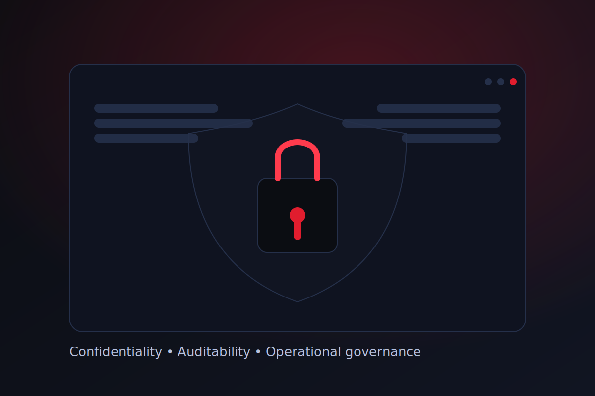

Trust & governance
Designed for confidentiality, auditability and public trust.
Digicourt workflows are built for the courtroom context: clear boundaries of access, procedural discipline, and operational documentation. Our goal is simple — technology that supports justice without introducing risk.
Australia only • Neutral operations • Documentation-ready
Ask about governance

Confidentiality boundaries
Role-based access and careful handling of sensitive material.
- Least-privilege operational access
- Controlled storage and handling
- Clear custody practices
Auditability
Structured operations that can be documented and reviewed.
- Run sheets & change tracking
- Incident logs when required
- Post-hearing summaries
Operational resilience
Reliability-first workflows designed to minimise disruption.
- Redundant capture paths
- Failover planning for streams
- Pre-hearing verification
Note
Digicourt does not provide legal advice and does not represent any party. We provide neutral technical services supporting courtroom operations within Australia.